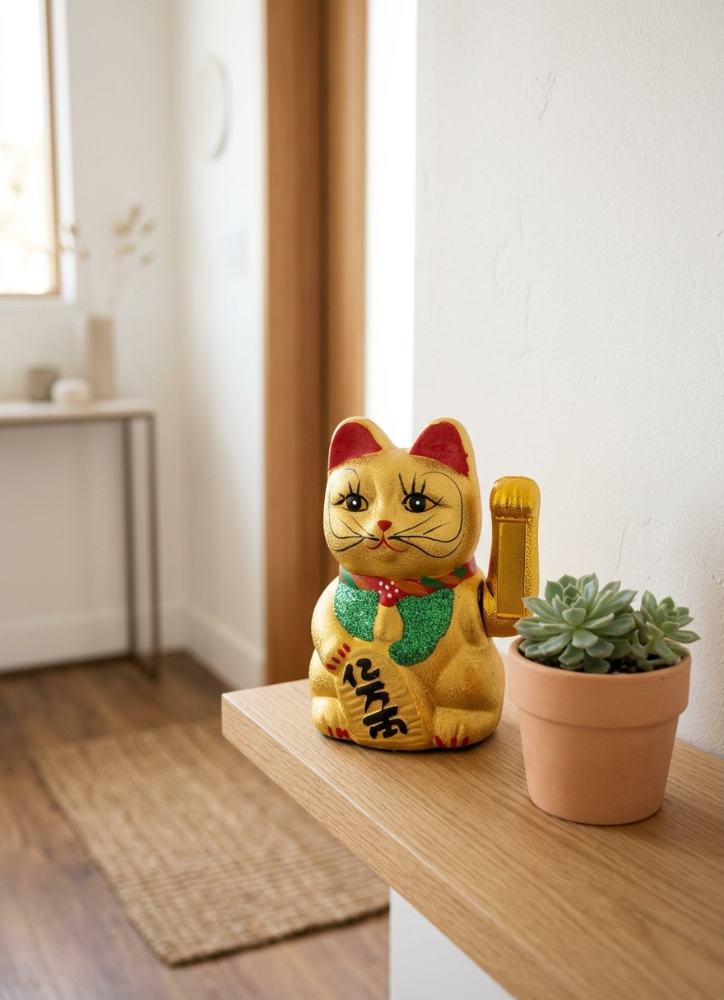

A classic ceramic maneki neko with a raised paw — Japan's most beloved symbol of luck and prosperity, sized for a shelf or entryway.

The beckoning cat has greeted customers and guests in Japan for centuries — a small ritual that says welcome.
The gold finish is traditionally linked to wealth, making it a popular gift for new homes, shops, and offices.
At about 6.8 inches tall it fits a shelf, desk, or counter without taking over the space.
Place it near an entrance, cash register, or work desk. The raised paw is said to invite good luck and customers alike.
It also makes a charming, low-key gift that carries a wish for good fortune.
Greets guests the moment they walk in.
A classic sign of a welcoming small business.
A small daily reminder of good luck and focus.
Traditionally the right paw is said to invite money and the left paw to invite people.
Yes, it is a ceramic figurine, so handle it gently and avoid drops.
Yes, it is a popular housewarming and business-opening gift.
A gold ceramic maneki neko — see current pricing and availability on Amazon.
Check Price on Amazon →